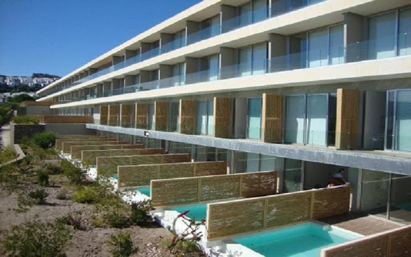
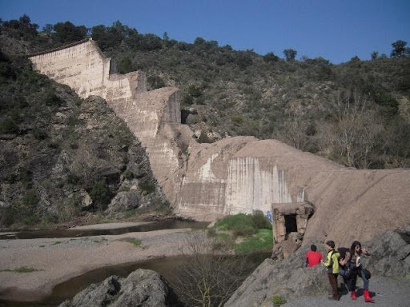

Civil Engineering

I started my educational and professional career in the civil engineering sector, mainly focusing on Water Resources and Environmental Engineering. I consider this domain important for increasing the resilience of societies and supporting their growth.
For two years I worked as a Site Engineer in a hotel reconstruction project, in Bodrum, Turkey (Cape Bodrum Beach Resort). My main tasks included: ensuring the proper implementation of the plans, quantity surveying, assisting in Health and Safety supervision, progress payments, archiving (e.g., tenders, diary), and assisting the accounting department. During that period, I proposed and implemented changes for improving the functionality, and Health and Safety standards of the hotel for both the renovation and operation phases. I, moreover, created a database for easy access to all information, and identified and corrected omissions of the accounting department.
During my studies at the National Technical University of Athens (NTUA), Greece, I worked on various individual and group projects related, among others, to water resources. Some of them included the design of dam, wastewater treatment facility, port, and water supply network. I, furthermore, conducted five 2-month internships in Greece and abroad, either as site engineer or in the design of hydraulic/geotechnical projects. More specifically, I worked on the determination of river flow after a dam construction (Greece). I also contributed to the design of geotechnical applications, following them up at site, and reporting the activities to the site manager (Turkey). Additionally, I conducted technical reports and site visits related to geotechnical aspects (Egypt, Jordan), and finally I was a Site Engineer intern during a hotel reconstruction project in Serbia.
